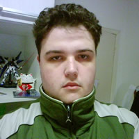

Sobre
A [TechParty Faccat 2014.1] é um evento que visa promover a tecnologia (Tech) durante um encontro informal e de congregação (Party). Serão duas talks interessantes por noite durante uma semana inteira dedicada a promover tecnologias e experiências com profissionais de efetiva experiência em suas áreas de atuação.
A TechParty da Faccat traz assuntos interessantes para leigos e usuários avançados de computação. As atividades serão ministradas por profissionais internos e de fora da instituição. Outra característica muito interessante é que o evento foi totalmente programado por alunos dos cursos da área de TI (Tecnologia da Informação) da Faccat (Bacharelado em Sistemas de Informação e Tecnólogo em Sistemas para Internet).
O evento também irá gerar certificado. Então quem comparecer, pode contar com ele.
Quando: semana de 31/março a 04/abril
Onde: auditório do Campus da Faccat (exceto dia 02/04, que ocorrerá em uma sala do Campus)
Horário: 19h45 às 22h15
Palestrantes
-
Performance Engineering in a Nutshell
Giovani Facchini
Giovani Facchini, mestre e professor de compiladores e complexidade de algoritmos. Tem 10 anos de experiência na área de TI atuando como pesquisador para RNP, desenvolvedor Zip Studio, Analista de Testes de Automação para HP e há 7 anos atua como líder de uma equipe de Testes de Desempenho planejando ambientes, dados e cenários de testes para identificação dos gargalos de sistemas. Além disso, possui certificações de Competent Leader e Competent Communicator pelo Clube Toastmasters International e MBA em Gestão Empresarial pela FGV.
-

CSS3 Media Queries
Fernando Porazzi @fernandoporazzi
Fernando Porazzi é desenvolvedor web. Atualmente trabalha com tecnologias como Javascript, HTML5, CSS3, PHP e NodeJS. Começou sua carreira como desenvolvedor há exatos 3 anos e desde então tem se dedicado cada vez mais no desenvolvimento front end de aplicações.
-

Como começar a desenvolver para iOS
Rafael Kellermann Streit @rafaelks
Rafael trabalha com desenvolvimento mobile há mais de 3 anos, focando em iOS na maioria do tempo, apesar de já ter feitos aplicativos para Android também. Já deu diversos cursos e palestras sobre desenvolvimento mobile aqui na região. Atualmente foca em seu produto chamado Carddi e consultorias de desenvolvimento para algumas empresas bacanas por aí.
-

Overview AngularJS + Ruby on Rails
Mauricio Baum Jr.
Programador de sistemas no Núcleo de Educação On-line da FACCAT e bolsista pesquisador na área de Radio-Frequency Identification (RFID). Já trabalhou com PHP, Javascript, Java, Android e atualmente com Ruby on Rails. Finalista do Campus Mobile 2013, do Instituto Claro, na categoria Empreendedorismo, com o aplicativo HeyTaxi (uma forma alternativa de se localizar pontos de taxi e taxistas) e convidado da Qualcomm no UPLINQ Conference em San Diego – CA.
-

O que é experiência do usuário?
Juliano Selli
Técnico em artes gráficas e administração de empresas, Juliano possui 16 anos de trabalho envolvido em agências de propaganda, agência digital e design, com isso, adiquiriu 6 anos de experiência em arquitetura de informação e UX. Trabalhou recentemente como arquiteto de informação do loja virtual www.panvel.com e atualmente é responsável pelo e-commerce do Grupo Dimed.
-

Criando Jogos 2D com Lua + Corona SDK
Leonardo Dalmina @manodalmina
Leonardo é Bacharel em Sistemas de Informação pela FACCAT, atua em tempo integral como Diretor de Informática na Prefeitura Municipal de Taquara e nas horas vagas como Desenvolvedor de Jogos Independente. Trabalhou como analista e desenvolvedor Java de 2006 até 2012, atuando também como professor de curso técnico durante 1 ano. Em 2013 iniciou um projeto pessoal para o desenvolvimento de um jogo mobile, e desde então vem se aprimorando na linguagem Lua juntamente com a engine Corona SDK.
-

Web e a criação de Jogos
Maiko Gabriel Kinzel Engelke
Maiko Engelke atualmente trabalha em back-end PHP, e tem o Front-End principalmente como hobby (por ocasião das circunstancias). Iniciou faculdade na Unisinos do Curso de Criação de Jogos e Entretenimento Digital antes de se transferir para a FACCAT, e desde então vem buscado aprimorar esse conhecimento extra. É ex-aluno da FACCAT por ter se mudado para Porto Alegre, onde ficaria difícil continuar. Atualmente se considera um gamer casual, embora seja fã de Final Fantasy, Gundam, Dynasty Warriors e Dark Souls (!).
- Praise the Sun! \\|+|// -

Do Cabrito ao Bode
Cícero Raupp Rolim
Cícero Raupp Rolim - Formado em Sistemas de Informação pela Ulbra e mestre em Computação Aplicada pela Unisinos. Trainee na Bode. Idealizador do Muambator e mais um monte de projetos que fracassaram.
Paulo Bridi - Formado em Sistemas de Informação pela PUCRS". Estagiário na Bode. Proprietário do Lance a Lance (aplicativo pra futebol no iOS), mas nunca viu seu time ganhar um título.
Santiago Andreuzza - "Extudante" de Sistemas de Informação na PUCRS e Manager na Bode. Manager no Muambator. Faz desde design de camisetas até entrega de encomendas. É o #faztudo. -

The MEAN Stack: MongoDB, ExpressJS, AngularJS and Node.js
Rodrigo Nascimento @orodrigok
Rodrigo Nascimento é desenvolvedor JavaScript desde 2008, front-end e back-end, entusiastas de novas tecnologias principalmente relacionadas a JavaScript. Trabalha com Node.js MongoDB e AngularJS em sua startup Carddi.
-

Versatilidade, negócios e nerdices
Lauro Becker
Sócio-Proprietário e Diretor de Tecnologia na Orgânica Digital. Arquiteto de Software há mais de 8 anos, é Oracle Certified Java Programmer (OCJP). Possui extenso conhecimento de gerenciamento de equipes de desenvolvimento e liderança técnica. MBA em Gestão Empresarial pela FGV e graduado pela Feevale em Sistemas para Internet.
Programação
| Data | Slot | Descrição |
|---|---|---|
| 31/03/2014 20:00 |
CSS3 Media Queries
Fernando Porazzi
|
Media Queries. O que são? Para que servem? Como usar? Ao longo dessa palestra iremos apresentar um panorama para começar a desenvolver interfaces adaptáveis aos dispositivos móveis e suas diversas resoluções. |
| 31/03/2014 21:00 |
Do Cabrito ao Bode
Cícero Raupp Rolim
|
Porque nós deixamos um emprego estável numa empresa multi-nacional para empreender no mercado. |
| 01/04/2014 20:00 |
Versatilidade, negócios e nerdices
Lauro Becker
|
Reavalie algumas de suas verdades. Talk sobre tecnologia, coisas velhas, gambiarras e o que o mercado espera de você. |
| 01/04/2014 21:00 |
Overview AngularJS + Ruby on Rails
Mauricio Baum Jr.
|
AngularJS é um framework JavaScript open-source, mantido pelo Google. Diferentemente de outros frameworks JavaScript, ele adota uma abordagem mais ligada à sintaxe HTML, funcionando como uma espécie de extensão da linguagem. Nesta talk teremos uma visão geral sobre este framework e seus recursos, através de exemplos de uso, aprofundando o tema até a integração com Ruby on Rails. |
| 02/04/2014 20:00 |
O que é experiência do usuário?
Juliano Selli
|
Qual a abrangência da experiência com o produto ou serviço, sendo uma interface física ou digital. Iremos explorar o efeito sistêmico da experiência objetivando o conhecimento global do experimentado pelo indivíduo, permitindo que a interatividade com o meio seja natural e simples. |
| 02/04/2014 21:00 |
Criando Jogos 2D com Lua + Corona SDK
Leonardo Dalmina
|
Talk voltada para quem deseja optar pelo desenvolvimento de jogos 2D utilizando a ferramenta Corona SDK e a linguagem Lua. Serão abordados tópicos essenciais como a introdução à linguagem Lua bem como à engine Corona SDK, com a apresentação da ferramenta e exemplos de implementação simples. Tópicos mais específicos que serão abordados: - Uso da library "physics" - Cuidados com o gerenciamento da memória - Organização dos dados para ganhar performance - Bibliografias recomendadas |
| 03/04/2014 20:00 |
Como começar a desenvolver para iOS
Rafael Kellermann Streit
|
Talk com dicas para quem quer iniciar com desenvolvimento no mundo iOS de acordo com a preferência do desenvolvedor, pois atualmente pode-se desenvolver para iOS com diversas linguagens, como JavaScript, C#, Ruby e Objective-C. Tentarei dar dicas para os passos iniciais de quem quer entrar no mundo Apple. |
| 03/04/2014 21:00 |
The MEAN Stack: MongoDB, ExpressJS, AngularJS and Node.js
Rodrigo Krummenauer
|
O conhecido JavaScript saiu dos browsers para dominar o mundo, hoje é possível programar um servidor web em JavaScript, salvar dados em um banco de dados JavaScript, além de tornar seu HTML reativo com JavaScript. A junção destas tecnologias, frameworks e ideias se popularizou como "MEAN Stack" e está ganhando o mundo por romper a barreira entre desenvolvedores front-end, back-end e DBAs, uma linguagem em todo o Stack necessário para um projeto web. |
| 04/04/2014 20:00 |
Performance Engineering in a Nutshell Giovani Facchini | Com sete anos como engenheiro de performance e três anos com simulações e automação, Giovani irá abordar os principais aspectos sobre engenharia de performance.
Por que devemos pensar em performance?
|
| 04/04/2014 21:00 |
Web e a criação de Jogos Maiko Gabriel Kinzel Engelke | Este talk busca apresentar características e tendências atuais do mundo de criação de jogos, porém focando nas vantagens e desvantagens da plataforma HTML5, assim como apresentar cuidados especiais para auxiliar aqueles entusiastas que gostariam de saber por onde podem começar. |
Local
Avenida Oscar Martins Rangel, 4500 - Fogão Gaúcho - Taquara, Rio Grande do Sul